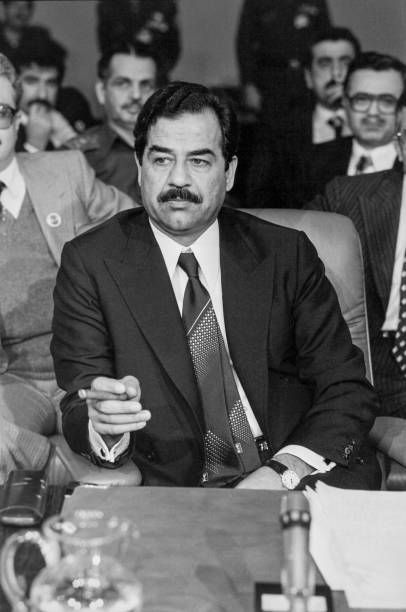

? 〆Saddam Hussein thought the U.S.A gave him the green light to invade Kuwait President Bush 41's Ambassador to Iraq, April Glaspie, told Hussein the U.S. did not want a trade war with Iraq. Saddam committed to peace, so long as the Kuwaitis agreed to meet OPEC production standards. Glaspie replied: "We have no opinion on the Arab-Arab conflicts, like your border disagreement with Kuwait... The instruction we had during this period was that we should express no opinion on this issue and that the issue is not associated with America." The Kuwaitis did not meet OPEC's standards so Iraqi tanks rolled across the border. The Iraqi leader was surprised when President Bush condemned the invasion.

Osirak 〆The assassination of Yahya El-Meshad, ascientist who was working on the nuclear reactor. On June 14, 1980, the French authorities found Yahya El-Meshad dead at the Le Méridien Hotel in Paris. Yahya El-Meshad's body was found with a knife wound to the neck, and a number of stab wounds were also found in various parts of his body. Following this incident, French investigators spoke about the Israeli Mossad being behind the assassination.
sick 〆Barzan Ibrahim Al-Tikriti had cancer and was sick during the trial. It is not permissible to imprison a person with such a sick disease, but they did not release him and the trial was very slow for him and he did not receive treatment, which makes the matter worse.
〆He escaped from prison A change in government led Saddam to return to Iraq in the early 1960s, although he was arrested in late 1964. He then spent the next two years in prison before escaping in 1966.
〆He earned a UNESCO award In the years that preceded his presidency, Saddam served as the vice-chairman of the Ba'ath Party. He used his position to modernise the Iraqi economy and nationalise the country’s oil industry. As profits rose, Saddam used the funds to improve education in the country. With literacy levels skyrocketing in Iraq as a result of Saddam’s programmes, UNESCO (The United Nations Educational, Scientific and Cultural Organisation) gave him an award.
〆1980–81: Iraqi offensive and Iranian pushback In September 1980 the Iraqi army carefully advanced along a broad front into Khūzestān, taking Iran by surprise. Iraq’s troops captured the city of Khorramshahr but failed to take the important oil-refining centre of Ābādān. By December 1980 the Iraqi offensive had bogged down about 50–75 miles (80–120 km) inside Iran after meeting unexpectedly strong Iranian resistance. The zeal of the Islamic Revolutionary Guards Corps (IRGC), an Iranian state militia initially tasked with safeguarding the Islamic Revolution
〆Israel's attempted assassination of Saddam Hussein I fired a missile during training to kill him, I did not expect the soldier who plays the role of Saddam Hussein. When I entered the place designated for him, and he started waving his hands "to the audience" in the manner of Saddam, I expected it to fall from him and hit him in a shot, but he did not expect it
〆All this information is from official websites and not from me.
〆Saddam was executed It is not permissible to execute a president by hanging; the appropriate method is a military execution by firing squad, which honors the gravity and respect due to the office. Executing any person on Eid day is not only legally questionable but also morally and culturally insensitive, as Eid is a sacred day of joy, forgiveness, and reconciliation. Carrying out an execution on such a day disregards the values of mercy and compassion that are central to the occasion, making the act profoundly inappropriate and disrespectful to the spirit of the celebration.